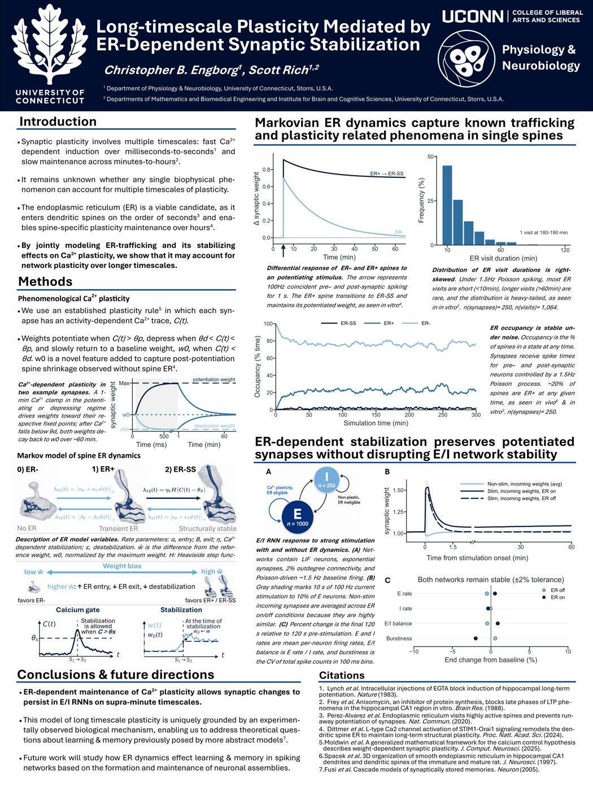

2026
Long-timescale Plasticity Mediated by ER-Dependent Synaptic Stabilization
WIP.
Collection of published papers and related academic work
2026
WIP.

2024
Using a novel cell-type specific knockout mouseline, we show that cannabinoid receptors within the noradregergic system modulate the acute stress response in a context-dependent manner.
Other academic works
Recent posters presented at conferences

2026
By jointly modeling ER-trafficking and its stabilizing effects on Ca2+ plasticity, we show that it may account for network plasticity over longer timescales.